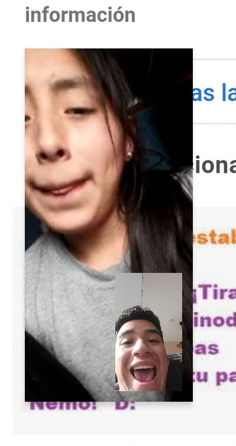

Hola, el hacer esta página me trae muchos recuerdos. Momentos
inolvidables y felices que viví contigo. Agradezco a Dios por hoy en
día tener a una persona tan especial para mi a mi lado. Tal vez no de
la forma que yo quisiera pero lo importante es que estas aqui. Desde
el día en que te volví a ver ese domingo a las 7:30 pm en el tren te
juro que todo cambio para mí. Hace mucho tiempo no me sentia tan feliz
y tan contento. Me sentí en ese momento en una nube, y desde ese
momento volvió a mi la esperanza de un nuevo inicio contigo. La foto
que verás a la derecha fue una de las mas bonitas que tenemos juntos.
Aveces pienso que lo tenia en ese momento y no lo sabia.
Como olvidar estas fotos, este día. Fue definitivamente uno de los días mas bonitos que he tenido.
Nos tomamos estas fotos frente al mar, al cual le hicimos una promesa de amor que no pudimos cumplir, no porque no quisieramos
sino porque de alguna forma el cruel destino lo quiso así. Recuerdo este día como si fuera ayer y en lo único que pienso y quiero es volver a ese día.
Te agradezco por compartir tu tiempo conmigo, se que aveces puedo hacer algo estresante pero eso no quiere decir que no te quiera.
Al contario, sigo siendo el mismo chico de 17 años que se enamoró de una niña de 15 años tan bella como tú.
Siempre que estaba contigo me sentia embobado, me sentia un chico con suerte. No me explicaba como una chica tan bella como tú podía haberse
fijado en alguien como yo. Una chica de muy bellos sentimientos, que a pesar de no ser tan melosa o cariñosa
me demostraba su amor y cariño de mil maneras diferente. Cada vez que escucho esta canción lo unico que hago es pensar en ti, en "Mi niña bonita".
Aun recuerdo el día que te la dedique, estabamos tu y yo sentados en la oficina y puse esta canción por que sentí
en lo más profundo de mi corazón que esa canción correspondia perfectamente a la forma en que yo te veía.

Bueno, en primer lugar perdón por la calidad de las fotos xd.
Cada llamada, videollamada, audio y mensaje que compartia contigo me alegraban el día. Nuestra llamadas y videollamadas
llenas de cariño, de risas y aveces de llantos. Nuestro mensajes donde no parabamos de enviar corazones, donde aún me decias te quiero
donde tbm me decias amor, mi niño al igual que yo a ti. Tantos recuerdos bonitos que guardo aqui en mi corazón de todas las veces que tu yo compartimos a travez del celular momentos inolvidables.
Y por último y no menos importante, unas de las fotos que nos representa, la primera foto que ambos publicamos en redes sociales,
donde oficializabamos nuestra razón. Donde le deciamos al mundo que estabamos juntos. Recuerdo ese día perfectamente, ese día conociste
y formaste parte de mi familia. Fuiste la primera persona que presente oficialmente ante mi familia como mi enamorada, nunca antes lo habia hecho, ya que
lo que senti por ti nunca lo habia sentido con nadie, fuiste en pocas palabras mi primer amor, el que nunca se olvida. Xiomara, gracias por todo lo que me diste,
por todo el amor que me brindaste, por el tiempo que te tomabas para venir a verme, por los celos que tenias cuando pensaba que hablaba con más chicas, por las lágrimas que alguna vez derramaste por mi.
Y tambien, te pido perdón por todo el calvario que te hice pasar, por todo lo que sufriste y pagaste por el hecho de estar conmigo. Nunca fue mi intención que pasaras por esto, lamentablemente las cosas
se salieron de nuestras manos, y ambos salimos dañados. Esto le dio fin a una historia que apenas se escribia, que apenas iniciaba. Yo ha día de hoy pago el precio elevado de no verte, de no poder compartir contigo
de no poder darte un abrazo o un beso, y es justo. Es justo, por todo lo que te hice pasar. Solo quiero tu perdón y decirte que no sabes como te extraño. Se que tal vez no fui el mejor enamorado, pero eso si, nada quita que te he amado y te quiero
como no he querido a nadie antes, y eso nunca va a cambiar.
Esta página se irá actualizando cada cierto tiempo. Espero estes atenta a todo lo nuevo.
Con mucho cariño
Para mi persona especial.
Aveces haces algo tan bonito por alguien y no es valorado. Es triste pensar que la persona
a la que quieres regresara a ti. Pero cuando ya no hay sentimientos de esa persona, no le importara
como te sientas ni como estes. Este fue un regalo que lo hice con el corazón en la mano, esperando una reaccion diferente
de la persona a la iba dedicada. Solo recibi rechazo ha este regalo que me costo tanto hacer.
Pero te digo algo, el que te perdonen una deslealtad no es para sentirse orgulloso.
Por que me pongo en el lugar de la otra persona y me imagino todo lo que ha sentido, pero hay algo en todo esto. Las personas perdonan pero nunca olvidan
y al final todo da vueltas y si no se la cobro antes sin que te des cuenta ten por segura que lo hara despues y no podrás decirle nada. Y no te reclamo por lo que me dijiste hace un rato,
pero eso si nadie puede negar que cuando estuve contigo di todo lo que estuvo en mis manos y hice muchas cosas solo por verte sonreir y enamorarte. Y eso que dices que hizo el que parece muy significante
fue lo minimo que debia hacer para poder estar como una persona como tu, una persona tan bella he increible con un muy buen corazón. Al final a pesar de esto el cariño y el amor que siento por ti nunca se irá.